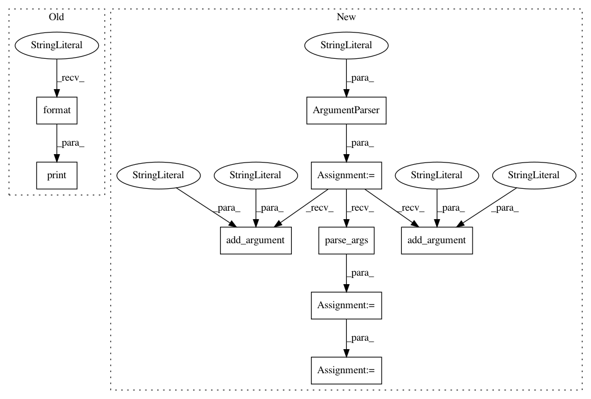

01d70cd14b2bd9f1754b94e03c3555ec412a3845,distributed/rpc/parameter_server/rpc_param_server.py,,,#,186
Before Change
for p in processes:
p.join()
print("Script took {} seconds".format(time.time() - start))
After Change
if __name__ == "__main__":
parser = argparse.ArgumentParser(description="Parameter-Server RPC based training")
parser.add_argument("--world_size", type=int, default=4, help="Total number of participating processes. Should be the sum of master node and all training nodes, add 1 if creating training node on master.")
parser.add_argument("--rank", type=int, default=None, help="Global rank of this process. Pass in 0 for master. Note that ranks should be unique across all nodes participating in training.")
parser.add_argument("--master_addr", type=str, default="localhost", help="Address of master, will default to localhost if not provided. Master must be able to accept network traffic on the address + port.")
parser.add_argument("--master_port", type=str, default="29500", help="Port that master is listening on, will default to 29500 if not provided. Master must be able to accept network traffic on the host and port.")
args = parser.parse_args()
assert args.rank is not None, "must provide rank argument."
os.environ["MASTER_ADDR"] = args.master_addr
os.environ["MASTER_PORT"] = args.master_port
// Get data to train on
train_loader = torch.utils.data.DataLoader(
datasets.MNIST("../data", train=True, download=True,
transform=transforms.Compose([
transforms.ToTensor(),
transforms.Normalize((0.1307,), (0.3081,))
])),
batch_size=32, shuffle=True,)
test_loader = torch.utils.data.DataLoader(
datasets.MNIST("../data", train=False, transform=transforms.Compose([
transforms.ToTensor(),
transforms.Normalize((0.1307,), (0.3081,))
])),
batch_size=32, shuffle=True, )
processes = []
world_size = args.world_size
if args.rank == 0:
p = mp.Process(target=run_parameter_server, args=(0, world_size))
p.start()
processes.append(p)
In pattern: SUPERPATTERN
Frequency: 3
Non-data size: 9
Instances
Project Name: pytorch/examples
Commit Name: 01d70cd14b2bd9f1754b94e03c3555ec412a3845
Time: 2020-02-12
Author: rvarm1@fb.com
File Name: distributed/rpc/parameter_server/rpc_param_server.py
Class Name:
Method Name:
Project Name: baldassarreFe/deep-koalarization
Commit Name: c9fb02940b16716901d0a2eef95abab827c25896
Time: 2020-05-15
Author: baldassarre.fe@gmail.com
File Name: src/koalarization/evaluate.py
Class Name:
Method Name:
Project Name: LCAV/pyroomacoustics
Commit Name: f2e989565ab89af58dff63ab3cf89fe63af38327
Time: 2020-06-02
Author: fakufaku@gmail.com
File Name: examples/raytracing.py
Class Name:
Method Name: